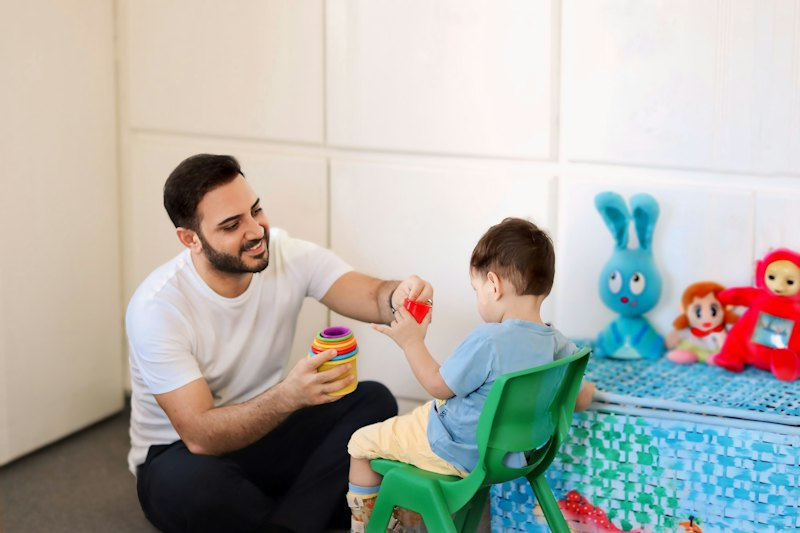
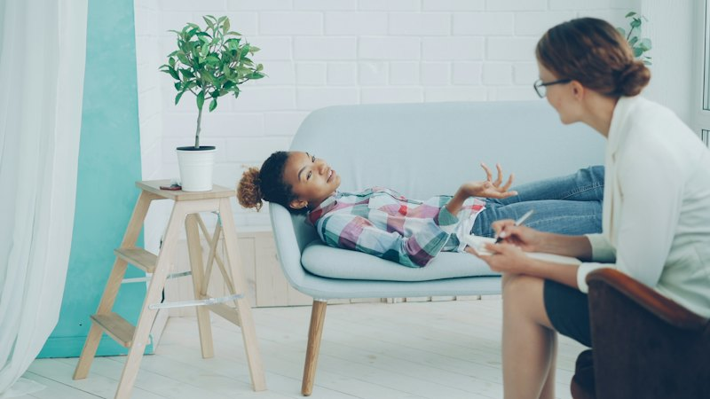
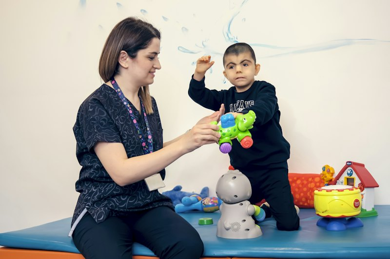
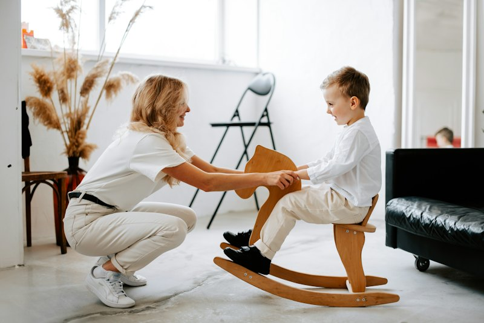
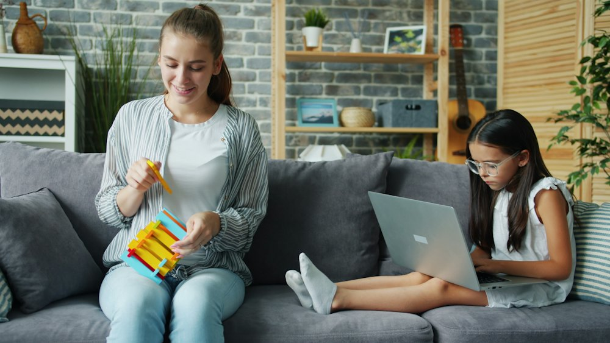
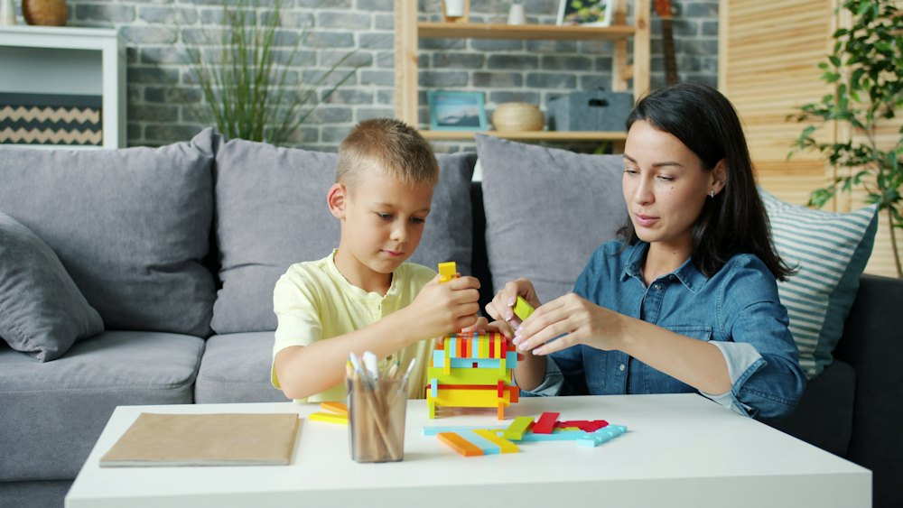
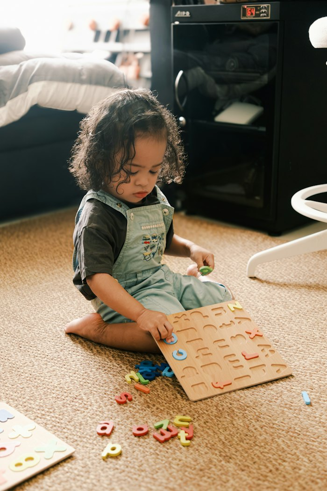
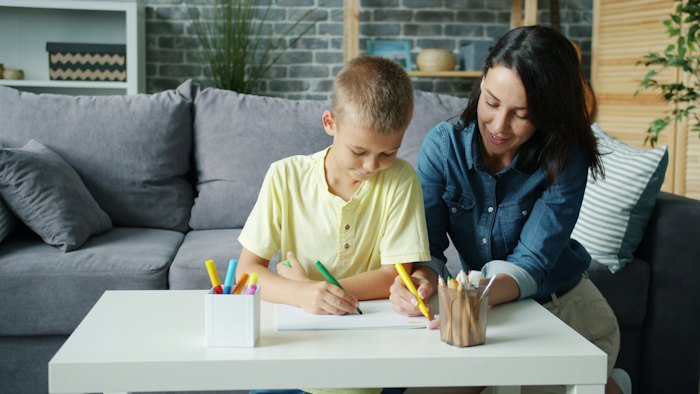
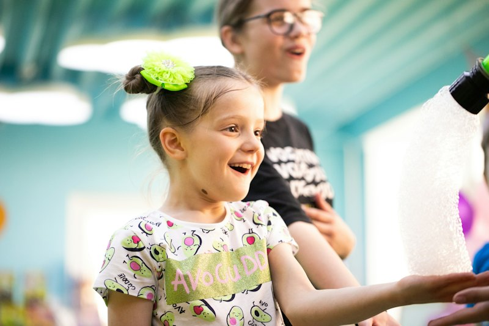

Evaluación inicial
Conocemos a tu peque y detectamos sus necesidades para proponer el plan adecuado.
Evaluaciones y terapias de lenguaje, aprendizaje, psicología, ocupacional y física, con terapeutas licenciadas que acompañan a tu familia en cada paso.
Conocemos a tu peque y detectamos sus necesidades para proponer el plan adecuado.
Atención en Surco y sesiones online para lenguaje, aprendizaje y psicología.
Te damos feedback y recomendaciones para seguir avanzando en familia.
Cada niño tiene su propio ritmo. Por eso empezamos con una evaluación y trabajamos con objetivos claros, de la mano con la familia.

Acompañamos a tu peque para que se exprese, se haga entender y se comunique con más seguridad en casa y en el colegio.
Apoyo para niños que presentan dificultades en su proceso de aprendizaje, para que avancen con confianza en el colegio.

Un espacio seguro para acompañar el desarrollo emocional de tu hijo y orientar a la familia en el día a día.

Trabajamos a través del juego para que tu peque gane autonomía en las actividades de su día a día.

Acompañamos el desarrollo del movimiento de tu hijo con actividades guiadas y adaptadas a su edad.
Cuéntanos qué has notado en tu peque y te orientamos sobre la evaluación más adecuada.
Pide orientaciónTe acompañamos desde el primer mensaje hasta cada avance de tu hijo.
Por WhatsApp nos cuentas sobre tu peque y resolvemos tus dudas.
Conocemos a tu hijo y evaluamos sus necesidades en la especialidad indicada.
Definimos objetivos y la modalidad que mejor se adapta a tu familia: presencial u online.
Al terminar cada sesión te contamos cómo le fue y te dejamos recomendaciones para casa.

¡Ahora también online!En nuestro centro en Santiago de Surco, con espacios pensados para los niños.
Consultas, evaluaciones y terapias online, con horarios en turno mañana y tarde.
Escríbenos y conversemos. Estamos para orientarte.
953 166 549
Somos un centro de terapias para niños en Santiago de Surco. Desde 2014 acompañamos a las familias con evaluaciones y terapias en distintas especialidades, siempre con cercanía y trabajando en equipo con los papás.
Un equipo de terapeutas licenciadas en cada especialidad.
Terapia de Lenguaje
Terapia de Aprendizaje
Psicología
Terapia Ocupacional y Física
* Espacio reservado para fotos y datos reales del equipo de ComuniK-T.
de las familias nos recomiendan en Facebook
Los avances de cada niño son nuestra mayor alegría. Mira los testimonios de las familias que confían en nosotros en nuestras redes.
Ideas sencillas para apoyar el desarrollo de tu hijo en casa.

Describir lo que hacen juntos mientras juegan es una forma natural de enriquecer su vocabulario.

Un espacio tranquilo y un horario fijo ayudan a tu hijo a concentrarse mejor.
Somos más de 22 mil seguidores entre Instagram y Facebook. Ahí compartimos consejos para padres y novedades del centro.
¿Tienes otra pregunta? Escríbenos por WhatsApp y te respondemos.

Escríbenos por WhatsApp al 953 166 549 contándonos sobre tu peque. Te orientamos sobre la especialidad indicada y coordinamos la fecha y hora.
Brindamos consultas, evaluaciones y terapias online en Terapia de Lenguaje, Terapia de Aprendizaje y Psicología.
Sí. Después de cada sesión te damos feedback y recomendaciones para que puedas seguir trabajando en casa.
Tenemos horarios disponibles en turno mañana y tarde. Escríbenos para revisar la disponibilidad.
Nuestro centro está en Santiago de Surco, Lima. Al agendar te compartimos la dirección exacta.
Completa tus datos y te llevamos directo a WhatsApp con tu mensaje listo para enviar.